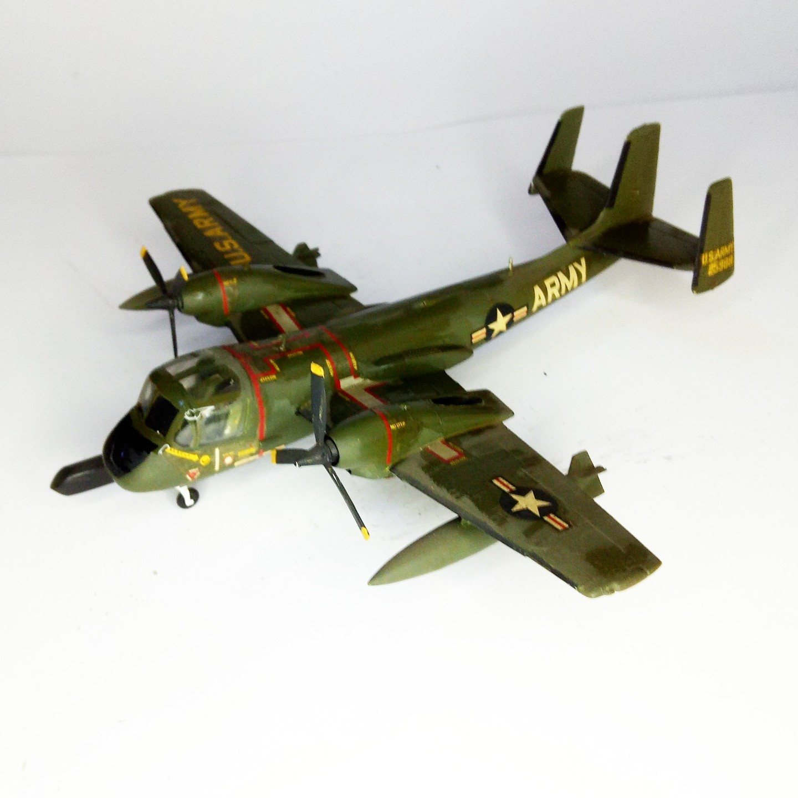

Aerei · scale model archive
Grumman Ov-1A Mohawk
Grumman Ov-1A Mohawk — Kit: Hasegawa, Scale: 1/72. The side scanning radar makes the model rather unique #1/72 #Hasegawa

Photo gallery
English description
The side scanning radar makes the model rather unique
#1/72 #Hasegawa
Descrizione italiana
Il side scanning radar makes il modello rather unique.